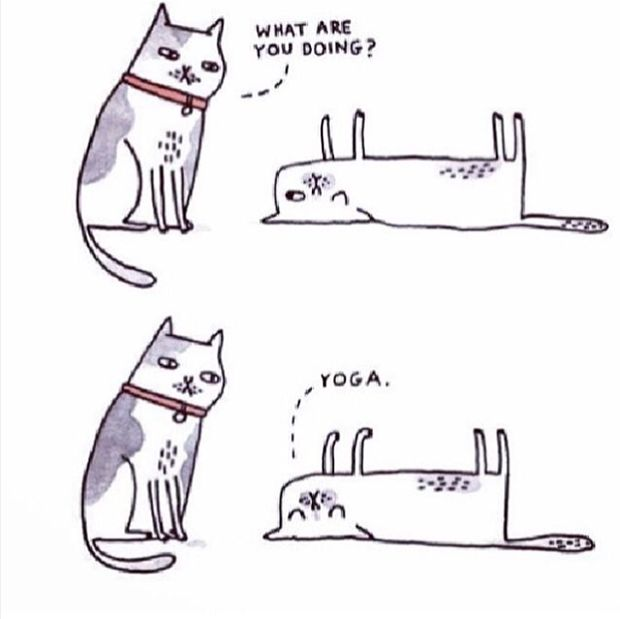
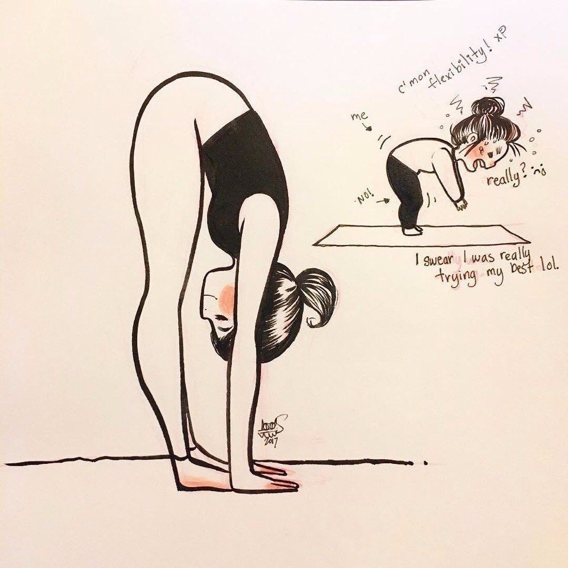
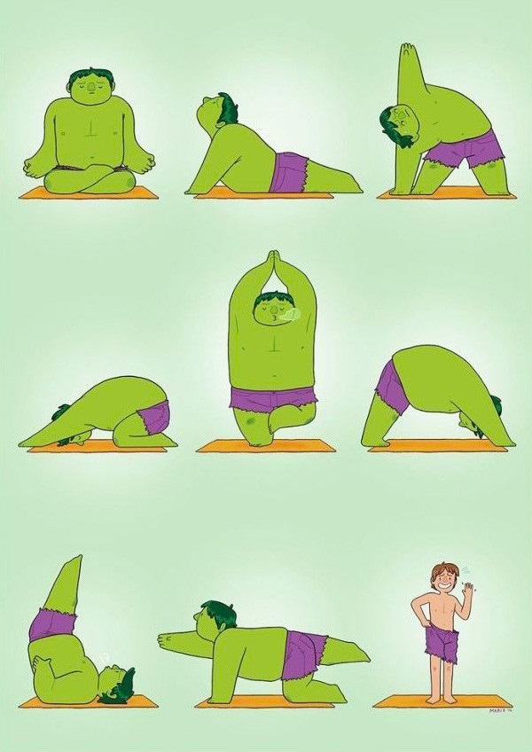
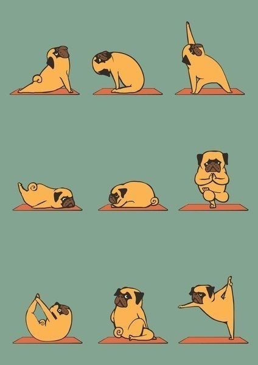

Зміст
-
Як йога впливає на організм
- Про фізичний ефект йоги
- Про психологічний вплив йоги
- Про вплив йоги на мозок та мислення
- Як покращити поставу за допомогою йоги
- Йога та схуднення
- Які є протипоказання для занять йогою
Як йога впливає на організм
Про фізичний ефект йоги
У йозі поєднуються вправи на силу, гнучкість, концентрацію, баланс, координацію і розслаблення.
Важливо, що під час занять йогою ми вчимося виконувати всі ці вправи усвідомлено, як процес вивчення та
розуміння свого
тіла.
Існують різні види йоги:
- де більше силового спрямування — вони розвивають витримку та укріплюють м’язи;
- більш м’які практики — вони чудово заспокоюють і допомагають розвинути гнучкість. Наприклад, коли пози довго утримуються на повному розслаблені;
- динамічні — окрім сили та гнучкості, добре розвивається плавність рухів і навіть граційність.
Ранкові та вечірні заняття можуть відрізнятися своїм ефектом. Зранку заняття зазвичай активніші та направлені на те, щоб розбудити себе та зарядитися на весь день, активізуватися.
Про психологічний вплив йоги
регулярні заняття йогою допомагають бути спокійнішим(-ою), не поринати у погані думки, відстежувати та помічати, коли твій потік думок несе зовсім у нехороший напрямок. Заняття з йоги нормалізують наш рівень активності: тривожного — заспокоює, втомленого — заряджає.
Про вплив йоги на мозок та мислення
Вправи з йоги — це ряд моторних, складно-програмованих завдань для всього тіла, для виконання яких вмикаються фактично всі структури головного мозку.
Що, своєю чергою, стимулює розвиток:
- міжпівкульної взаємодії — швидкість обробки інформації;
- стволових утворень головного мозку — енергопостачання та рівень активації всього мозку;
- лобних структур — сприйняття та відтворення складних алгоритмів, причинно-наслідкових зв’язків, критичного мислення, щоб фільтрувати інформацію.
Також йога допомагає сприймати інформацію та покращити пам’ять.
Як покращити поставу за допомогою йоги
Йога може допомогти покращити поставу. За її правильне формування відповідальні насамперед внутрішні м’язи корпусу і глибинні м’язи хребта. Ці м’язи потрібно й укріплювати, й розтягувати, щоб не було напруження чи затисків.
У багатьох людей є протрузії та грижі, тож вправи важливо виконувати обережно. У жодному разі не допускати болісних відчуттів, тому краще виконувати їх під наглядом тренера
Щодо часу, який потрібно, щоб покращити поставу, це залежить від багатьох факторів та є індивідуальним. Адже у кожного своя початкова точка, стан здоров’я, особливості конституції, стиль та ритм життя, досвід, наявність чи відсутність травм.
Однозначно ефект відчуватиметься вже за кілька занять. Але це ще залежить від вибраного стилю йоги, компетенції тренера та частоти занять.
Але що точно — стабільний та чудовий результат від практики з йоги ми отримуємо шляхом системних занять (це як і здорове харчування)
Йога та схуднення
Якщо є ціль схуднути саме за допомогою йоги, для цього треба вибирати більш інтенсивні та динамічні стилі. Наприклад, аштанга-йога, або гаряча йога (проходить у залі за високої температури та вологості). Проте у них є протипоказання, з якими треба попередньо ознайомитись. А ще краще — проконсультуватися з лікарем, — розповідає тренерка.
Потрібно розуміти, що схуднення — зовсім не основна ціль у йозі. Вона укріплює тіло, робить його сильнішим, витривалішим та гнучкішим.
Також заняття йогою вчать бути уважнішим(-ою) та турботливішим(-ою) до себе. Це, своєю чергою, може повпливати на більш усвідомлений вибір продуктів, віддавання переваги більш здоровим стравам. А також краще відчувати, коли ми вже наситились, та не переїдати.
Звісно, це не означає, що при заняттях йогою харчування поліпшується саме собою. Усе залежить від вибору людини. Проте йога — чудовий інструмент, який допоможе на шляху покращення і свого здоров’я, і харчування, і ставлення до себе, і зовнішнього вигляду також.
Які є протипоказання для занять йогою
Перед заняттям йогою важливо враховувати кілька моментів.
Базові протипоказання:
- гострі інфекційні захворювання, зокрема ГРВІ з підвищеною температурою;
- гнійні та некротичні процеси;
- будь-які гострі стани, загострення хронічних захворювань;
- виражена фізична астенія після фізичної травми, оперативного втручання, перенесеного захворювання;
- післяопераційний період;
- травми.
Перш ніж починати займатись йогою, краще проконсультуватися з лікарем. Якщо є проблеми зі здоров’ям — то це обов’язково!
Тоді з його дозволу можна для початку обрати не просто йогу, а саме йоготерапію. Це окремий напрям, де вправи м’якіші, їхня ціль — відновити здоров’я. Такі заняття зазвичай проводить тренер-реабілітолог.
Групи у йоготерапії менші та заняття мають більш індивідуальний підхід, щоб допомогти впоратися з конкретним нездужанням або станом.
Тренер підбирає та адаптує пози під вимоги організму людини. Ціль таких занять — розв’язати певні проблеми, які турбують людину:
- полегшити хронічний біль;
- прискорити відновлення після травми;
- покращити гнучкість;
- зменшити стрес;
- покращити самопочуття;
- отримати допомогу при депресії.
Якщо ж людина добре почувається та не має протипоказань, то починати краще із занять для початківців. На них тренер більше часу приділяє техніці виконання, анатомічним роз’ясненням, налаштуванням поз.
Ти — найкращий експерт свого тіла. Якщо відчуваєш гострий, колючий біль, особливо у суглобах, при виконанні поз, треба робити меншу амплітуду або пропустити її.
Після тренування ти можеш детальніше розпитати тренера про цей момент. Можливо, треба трохи змінити техніку виконання. Ми ж усі різні, у кожного свої особливості. Важливо пам’ятати, що йога — це не змагання. Ні з собою, ні з людьми на сусідніх килимках.
Необхідно зберігати здоровий глузд, виконуючи асани, та спостерігати за реакцією свого тіла. Адже займаємося ми, щоб покращити самопочуття